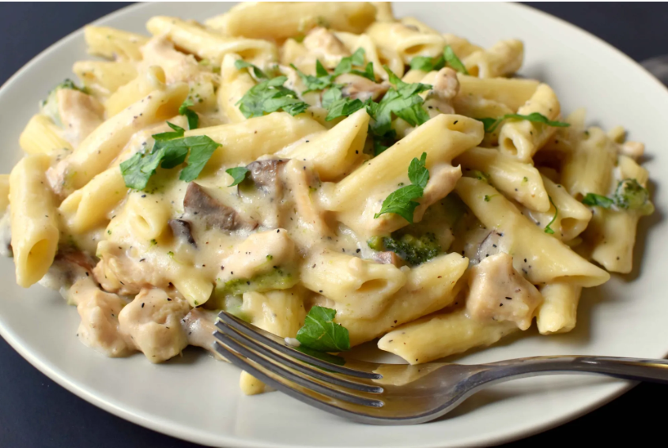

Home
Angel Chicken Pasta

Description:
Chicken Pasta with Mushrooms and Broccoli, in a Creamy White Sauce
Prep Time: 15 mins,
Cook Time:30 mins,
Total Time:45 mins
Cuisine: Italian
Keyword: pasta, white sauce pasta
Servings: 4
Ingredients
for white sauce
- 2 tbsp flour
- 2 tbsp butter
- pepper (as required)
- salt (as required)
- 3/4 cup milk
For Pasta
- 8 oz Penne pasta (or pasta of your choice)
- 1/2 cup chicken broth (low sodium)
- 9 oz large chicken breast
- 1/2 cup broccoli (chopped)
- 1/2 cup Portobello mushroom (chopped)
- 1 cup white sauce (recipe mentioned above)
- 3 tbsp butter
- 3 cloves garlic (finely chopped)
- 2 tbsp parsley (chopped)
- olive oil (as required)
- pepper (as required)
- salt (as required)
Steps
For White Sauce
- Melt butter in a pan, add flour and whisk vigorously to prevent sticking to the bottom.
- Add milk and whisk on low heat for 2 minutes until it becomes thickened.
- Season with salt and pepper.
For Pasta
- Cook pasta as per the instructions specified on the packet. As it gets cooked, drizzle olive oil to prevent pasta from sticking.
- Clean and slice chicken into small pieces. In another pan, cook chicken with water, salt, and pepper. Keep aside once cooked.
- In another pan, add butter. As it melts, add chopped garlic. Sauté on low heat until it loses its raw smell.
- Add broccoli florets and mushrooms. Season with pepper and salt. Close the lid and cook for 2 minutes.
- Add the cooked chicken pieces and mix in white sauce.
- Add pasta and chicken broth.
- Bring to a simmer by cooking on low heat until the sauce starts thickening.
- Garnish with chopped fresh parsley leaves.